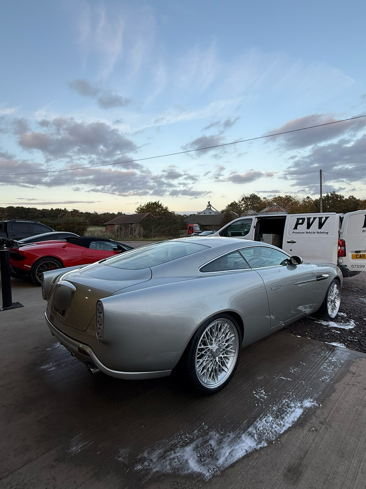
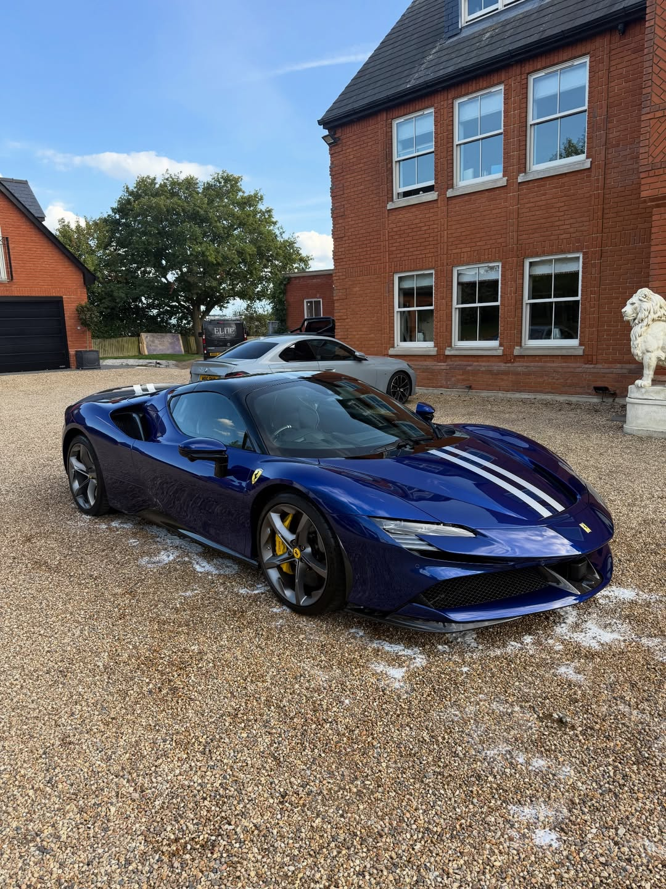
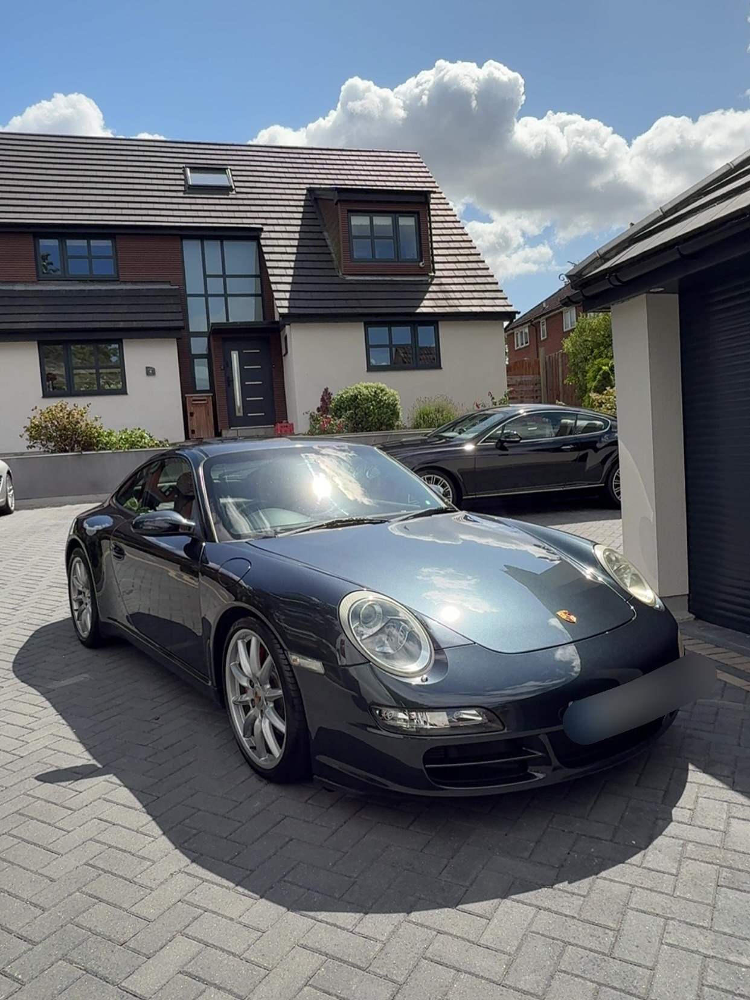
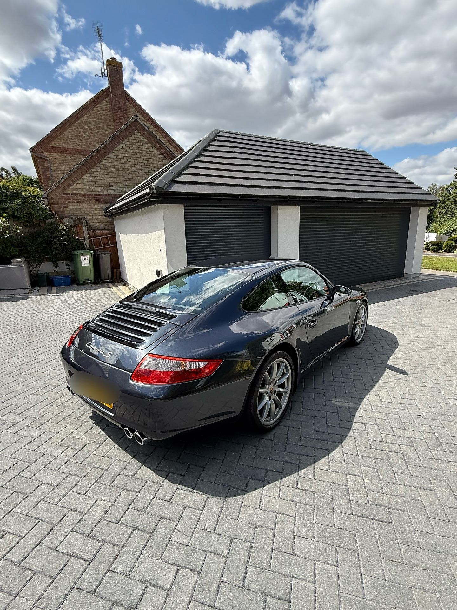
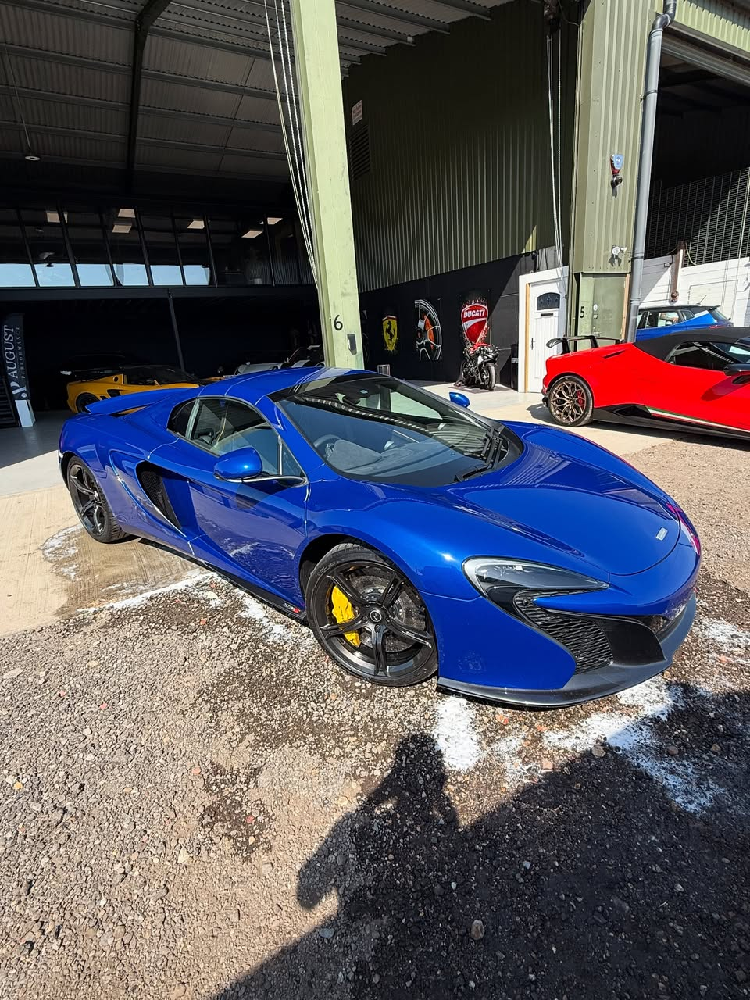
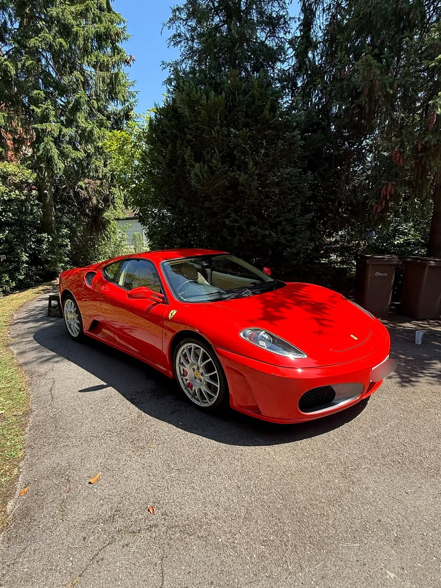

Maintenance Valets
Keep your vehicle looking consistently fresh, clean and well-presented with regular upkeep.
Premium Vehicle Valeting • Maldon
Premium Vehicle Valeting delivers a sleek, high-end finish with a focus on quality presentation, careful detailing and friendly professional service.

High attention to detail for luxury, sports and everyday vehicles.
Clean, professional presentation with quality-focused workmanship.
A polished customer experience from first contact to final handover.


About
Premium Vehicle Valeting offers high-end exterior and interior vehicle care with a sharp eye for finish, presentation and detail.
With 7 years in business, Miles has built a service focused on making vehicles look their absolute best, whether that means a regular maintenance valet or a more in-depth correction and protection package.
Why Choose Us
Built around precision, consistency and a genuine passion for detail.
With years of hands-on experience, every vehicle is treated with expert care and attention.
No shortcuts. Every clean, polish and finish is carried out with precision and care.
Turning up on time, delivering consistent results, and maintaining a professional standard.
Only high-quality products are used to ensure a long-lasting, high-end finish.
Services
A premium selection of valeting and detailing services designed to restore, refine and protect your vehicle.
Keep your vehicle looking consistently fresh, clean and well-presented with regular upkeep.
Add long-lasting protection and enhance gloss with a durable premium coating.
A more intensive transformation for vehicles needing extra care inside and out.
Improve paint clarity, gloss and finish with careful polishing work.
Helping reduce the appearance of imperfections and improve overall presentation.
Tailored vehicle care suited to prestige, performance and enthusiast-owned cars.
Reviews
Trusted by clients across Maldon for quality, detail and reliability.
Gallery
A first look at the kind of premium presentation and vehicle finish the brand is built around.






FAQs
A few quick answers to things customers often want to know before booking.
Premium Vehicle Valeting is based in Maldon and covers surrounding areas. If you are unsure whether your location is included, just get in touch and we will be happy to help.
The time depends on the service and the condition of the vehicle. A maintenance valet may take a couple of hours, while deep cleans, polishing or paint-focused services can take longer to achieve the best finish.
Yes — all professional equipment, tools and products are provided to deliver a high-quality result and a clean, premium finish.
Ceramic coating is a protective layer applied to your vehicle's exterior. It helps enhance gloss, adds protection against dirt and contaminants, and makes future cleaning easier.
Machine polishing and paint correction can improve the appearance of light scratches, swirl marks and other minor imperfections. The final result depends on the condition of the paintwork.
You can book by calling, emailing or getting in touch directly. From there, the right service can be discussed and a suitable time arranged.
Location
Based in Maldon, Premium Vehicle Valeting provides reliable, high-quality vehicle care across the local area. Whether it's regular maintenance or a full detail, your vehicle is in safe hands.
Get in touch
Whether you need routine maintenance or a more premium enhancement service, Premium Vehicle Valeting is ready to help.